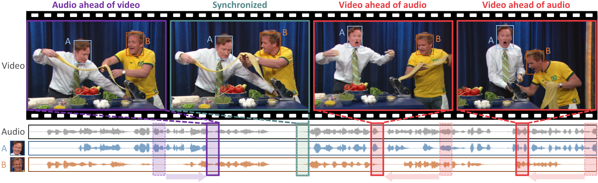

Looking into Your Speech: Learning Cross-modal Affinity for Audio-visual Speech Separation
CVPR-2021
Authors
- Jiyoung Lee✲
- Soo-Whan Chung✲
- Sunok Kim
- Hong-Goo Kang♱
- Kwanghoon Sohn♱
✲ equal contribution
♱ co-corresponding authors
Abstract

 The objective of this paper is to separate a target speaker's speech from a mixture of two speakers using a deep audio-visual speech separation network. Unlike previous works that used lip movement on video clips or pre-enrolled speaker information as an auxiliary conditional feature, we use a single face image of the target speaker. In this task, the conditional feature is obtained from facial appearance in cross-modal biometric task, where audio and visual identity representations are shared in latent space. Learnt identities from facial images enforce the network to isolate matched speakers and extract the voices from mixed speech. It solves the permutation problem caused by swapped channel outputs, frequently occurred in speech separation tasks. The proposed method is far more practical than video-based speech separation since user profile images are readily available on many platforms. Also, unlike speaker-aware separation methods, it is applicable on separation with unseen speakers who have never been enrolled before. We show strong qualitative and quantitative results on challenging real-world examples.
The objective of this paper is to separate a target speaker's speech from a mixture of two speakers using a deep audio-visual speech separation network. Unlike previous works that used lip movement on video clips or pre-enrolled speaker information as an auxiliary conditional feature, we use a single face image of the target speaker. In this task, the conditional feature is obtained from facial appearance in cross-modal biometric task, where audio and visual identity representations are shared in latent space. Learnt identities from facial images enforce the network to isolate matched speakers and extract the voices from mixed speech. It solves the permutation problem caused by swapped channel outputs, frequently occurred in speech separation tasks. The proposed method is far more practical than video-based speech separation since user profile images are readily available on many platforms. Also, unlike speaker-aware separation methods, it is applicable on separation with unseen speakers who have never been enrolled before. We show strong qualitative and quantitative results on challenging real-world examples.
Framework
Overview of our framework for reconstructing a video frame. Our model mainly consists of three parts: an encoder, a memory module, and a decoder. The encoder extracts a query map $\mathbf{q}_t$ of size $H\times W \times C$ from an input video frame ${\bf{I}}_t$ at time $t$. The memory module performs reading and updating items $\mathbf{p}_m$ of size $1\times 1\times C$ using queries $\mathbf{q}_t^k$ of size $1\times 1\times C$, where the numbers of items and queries are $M$ and $K$, respectively, and $K=H\times W$. The query map $\mathbf{q}_t$ is concatenated with the aggregated items $\hat {\bf{p}}_t$. The decoder then inputs them to reconstruct the video frame $\hat {\bf{I}}_t$. For the prediction task, we input four successive video frames to predict the fifth one.
Paper

|
H. Park, J. Noh, B. Ham Learning Memory-guided Normality for Anomaly Detection [Paper] [Code] |
BibTeX
@inproceedings{park2020learning,
title={Learning Memory-guided Normality for Anomaly Detection},
author={Park, Hyunjong and Noh, Jongyoun and Ham, Bumsub},
booktitle={Proceedings of the IEEE/CVF Conference on Computer Vision and Pattern Recognition},
pages={14372--14381},
year={2020}
}
Acknowledgements
This research was partly supported by Samsung Electronics Company, Ltd., Device Solutions under Grant, Deep Learning based Anomaly Detection, 2018–2020, and R&D program for Advanced Integrated-intelligence for Identification (AIID) through the National Research Foundation of KOREA(NRF) funded by Ministry of Science and ICT (NRF-2018M3E3A1057289).